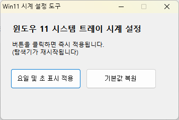
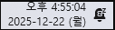

윈도우 시계 설정
작업 표시줄 시계를 더 유용하게
오른쪽 제일 하단에 보면 날짜/시계가 있죠. 이 부분을 조금 더 유용하게 바꿔주는 미니앱입니다. 기존의 날짜, 오전/오후, 시간 표시에 요일과 초를 더해 깔끔하게 나타내어줍니다.
⏰
요일 및 초 단위 표시
기본 시계에 요일과 초를 추가하여 더 상세한 시간 정보를 제공합니다.
↩️
원클릭 복원
마음에 들지 않으시면 기본값 복원을 통해 처음으로 되돌릴 수 있습니다.
⚡
간편한 실행
설치 없이 exe 파일 실행만으로 즉시 적용됩니다. 실행 시 작업표시줄이 잠시 사라졌다가 다시 나타납니다.

설정 도구 인터페이스

변경된 작업 표시줄 시계